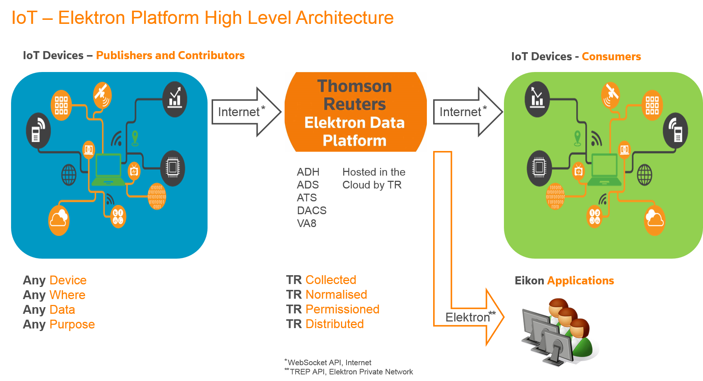

MAXiM IoT using Elektron Data Platform
There are many fields in this fertile country, so we might find other tractors and their data too.
If we can aggregate the inputs from many farmers, we have a real-time view of turnip harvesting, across the whole country!
We'd need some simple way to do that, internet-accessible. A common place for farmers to contribute their tractor sensor data...
Introducing....

By using our existing technologies such as TREP and the recently-annnouced Websocket API, we can aggregate data from across the internet...
It's starting to look interesting!
For a bigger picture of that graphic, please click here